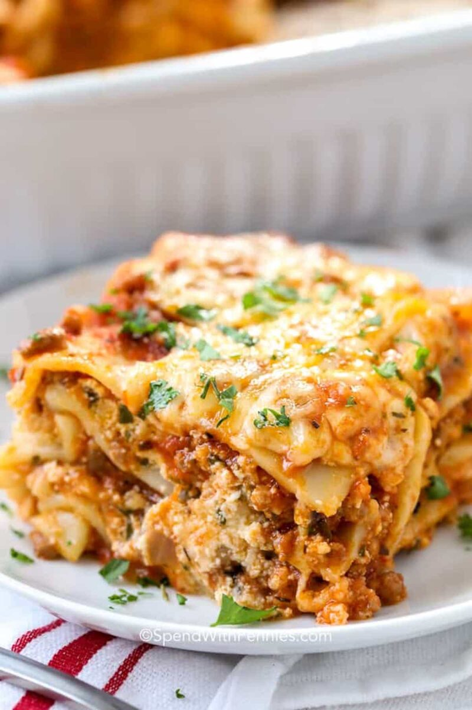

Odin Recipes

Description
Lasagna is made up of pasta sheets, filled with ricotta cheese and tomato sauce. Topped off with even more cheese and baked to a perfect brown crisp.
Ingredients
- 12 whole wheat lasagna noodles
- 1 pound lean ground beef
- 2 cloves garlic, chopped
- 1 teaspoon dried oregano, or to taste
- ½ teaspoon garlic powder
- salt and ground black pepper to taste
- 1 (16 ounce) package cottage cheese
- ½ cup shredded Parmesan cheese
- 2 eggs
- 4 ½ cups tomato-basil pasta sauce
- 2 cups shredded mozzarella cheese
Lasagna